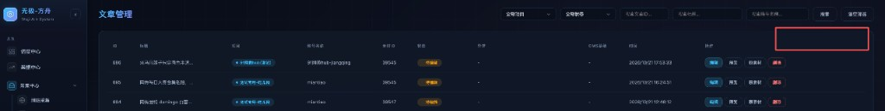
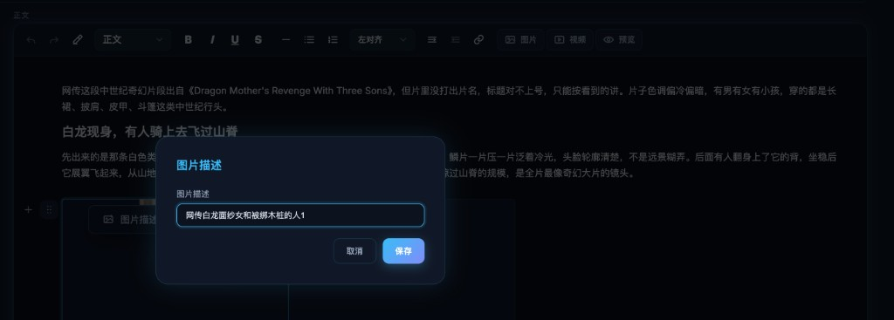

运营在「素材管理」「文章管理」列表上盯处理进度时，状态不会自己变，只能整页刷新；一刷新顶部筛选项就丢，频道等条件要重选。本期要让列表状态能自动跟上处理结果，并提供只刷列表、不动筛选项的手动刷新。浏览器整页刷新（F5）或重新打开页面后，不要求记住筛选项。
文章二次编辑里，本地上传的正文图片不会自动带图片描述，运营要一张张填。本期上传时用实际文件名（去掉扩展名）自动写入描述，之后仍可手改。不做「按新标题一键批量改编号」。
做：素材管理、文章管理两张列表的自动状态更新与手动刷新；二次编辑本地上传图片描述自动带入；加行焦点；正文图片统一显示宽度。
不做：筛选项本地持久化（F5 / 重开页面后记忆）；「一键按新标题改成 新标题01、02…」；改自动生成流水线以外的业务规则。
素材管理。顶部含搜索与多类筛选（含频道等）。「刷新」放在筛选行右侧、列表上方操作区。

文章管理。顶部含项目、状态、文章 ID、标题、账号名称等筛选。「刷新」位置与素材管理一致：筛选行右侧、列表上方。
FZ-LIST-01
列表状态自动更新与手动刷新
适用范围：方舟后台「素材管理」列表、「文章管理」列表。两页规则相同，仅筛选项字段随现网页面不同。
功能逻辑
列表行上的「状态」会随后台处理进度变化。运营停留在当前列表页时，无需整页刷新，也应看到状态从处理中变为已完成或失败等最新结果。
另提供页内「刷新」：只请求并重绘当前列表数据（含状态列），不触发整页重载，不清空、不重置顶部任何筛选项，也不因刷新本身跳回第一页以外的无意义页码变更（见业务规则）。
业务规则
1. 自动更新
- 当列表中存在仍处于处理中（或等价进行中）的记录时，系统须持续获取最新状态，并更新对应行的状态展示。
- 当列表中已无进行中记录时，可停止或降低自动更新频率；具体策略研发评估，须保证有进行中任务时状态最终能反映到界面。
- 自动更新只改列表数据与状态展示，不得重置筛选项、搜索关键字、已选项目 / 频道 / 状态等条件。
- 自动更新不得把用户滚到列表顶部以外的阅读位置强制拽回顶部；若整表替换导致滚动位置轻微偏移，可接受，但禁止整页跳转到页面顶端。
- 实现方式（轮询间隔、WebSocket、任务完成回调等）由研发选型；产品验收只看：进行中任务结束后，停留在该页的运营能在合理时间内看到最新状态，且筛选未被清掉。
2. 手动刷新
- 按钮文案：「刷新」。
- 点击后按当前顶部全部筛选项与搜索条件重新拉取列表。
- 刷新后筛选项、输入框内容、下拉选中值全部保持点击前的样子。
- 若页面有分页：手动刷新后停留在当前页码；若当前页因数据变化无数据，回退到有数据的最近一页（通常为上一页或第一页），筛选项仍保留。
- 不要求浏览器 F5、关闭标签再打开、或从其他菜单重新进入时记住筛选项。
页面交互
- 「刷新」位于筛选区域右侧、表格上方，两页位置风格一致，与现网主色按钮体系对齐（次要操作即可，不必做成主色「搜索」同级强调，除非现网规范要求统一）。
- 点击「刷新」：按钮可短暂进入 loading（文案仍为「刷新」或转圈），请求进行中再次点击不重复叠加请求；结束后恢复可点。
- 刷新成功：列表内容与状态更新；无 Toast，或仅在失败时 Toast（见异常）。
- 自动更新：无额外打扰型弹窗；状态徽章文案与颜色跟现网状态枚举一致。
- 「搜索」「清空筛选」现网逻辑不变。「清空筛选」仍清空全部条件并重查；与「刷新」区分开。
异常
- 手动刷新接口失败：列表保持刷新前数据与筛选项不变；Toast「刷新失败，请稍后重试」；按钮恢复可点。
- 自动更新单次失败：不打断操作、不清空筛选；可静默重试；连续失败时不必弹窗轰炸，允许下次成功时再更新。
- 断网：手动刷新走失败 Toast；自动更新暂停或失败静默，恢复网络后继续。
- 当前页无数据且非筛选过严导致的空：展示现网空态；筛选项仍保留，便于运营改条件再搜或再刷新。
数据流转
手动刷新与自动更新均携带当前页的筛选条件与分页参数请求列表接口，用返回数据替换表格行。状态字段以服务端最新值为准。不写回本地持久化筛选配置。

二次编辑正文中的「图片描述」弹窗。本地上传后描述应已预填文件名（去扩展名）；运营可改后点「保存」。
FZ-IMG-01
正文图片描述自动带入文件名
适用范围：文章二次编辑 → 正文中插入 / 上传本地图片。
功能逻辑
运营从本地选择图片插入正文时，系统读取该文件的原始文件名，去掉扩展名后写入该图的「图片描述」默认值。之后运营仍可通过现网「图片描述」弹窗修改并保存。
本期不提供「按文章标题一键批量改成 新标题01、02…」入口或默认行为。
业务规则
- 仅本地上传插入正文的图片适用自动带入。从素材库选择、系统自动生成插入、视频截帧插入等：若来源本身已有描述或文件名，按现有逻辑；若当前为空，应用同一规则——有可用原始文件名则去扩展名写入，没有则保持空，不强行编造。
- 扩展名处理：去掉最后一个「.」及之后部分。例：「文章标题01.jpg」→「文章标题01」；「foo.bar.png」→「foo.bar」。
- 无扩展名的文件名原样作为描述。
- 多张一次上传：每张各自用自己的文件名生成描述，互不影响。
- 自动写入只发生在插入当时。插入后运营手改过的描述，不会被后续其它操作自动覆盖（无批量重编号功能）。
- 「取消」关闭图片描述弹窗：不保存本次弹窗内的编辑；已在插入时写入的默认描述仍保留在图片上，除非运营此前已改过并以保存为准（与现网弹窗保存语义一致）。
页面交互
- 本地上传成功并插入正文后，打开或查看该图「图片描述」时，输入框已带默认文案（去扩展名后的文件名）。
- 运营可编辑后点「保存」写入；点「取消」或遮罩关闭按现网关闭逻辑，不提交弹窗内未保存修改。
- 无新增工具栏按钮、无一键批量改描述按钮。
异常
- 无法读取文件名（极端环境）：描述留空；不阻断上传与插入。Toast 非必须；若现网上传失败已有提示则沿用。
- 文件名仅为扩展名（如「.jpg」）或去扩展名后为空：描述留空，允许运营手填。
- 上传失败：不插入图片，不写入描述。
数据流转
上传成功后，前端（或后端回传的元数据）取原始文件名 → 去扩展名 → 写入该正文图片节点的描述字段 → 随文章草稿 / 发布一并保存。后续手改走现网图片描述保存接口。
本项为编辑器焦点缺陷，无单独现网截图。验收以二次编辑正文操作复现为准。
FZ-BODY-01
正文添加一行后焦点停留
适用范围：文章二次编辑 → 正文块编辑。
功能逻辑
运营在某一位置（含文末）点击「在这里加一行」后，系统在该位置插入新的空文本行，视口保持在新行附近，光标落在新行内，可直接键盘输入。不得把滚动位置或焦点无故送回正文顶部。
业务规则
- 任意正文位置的「在这里加一行」（含底部）行为一致：插入成功后焦点 = 新行。
- 新行为空文本行，可立即输入；输入行为与现网普通正文行一致。
- 若插入时触发自动滚动，只允许滚到能看见新行的最小范围，禁止滚到文档顶部。
页面交互
- 点击「在这里加一行」→ 新行出现 → 光标在新行闪烁 → 键盘输入字符出现在新行。
- 不新增确认框；无成功 Toast。
异常
- 插入失败（接口或编辑器内部错误）：不插入行；焦点留在原位置；Toast「添加失败，请重试」。
- 正文过长导致布局重算：仍须保证焦点在新行；若偶发丢失焦点，视为未达标。
数据流转
仅编辑器本地文档模型增加一行；随文章保存草稿 / 发布写入服务端。本项不新增接口字段。
本项为正文图片展示缺陷。自动生成或视频截帧插入的图在编辑器中宽度应一致；高度随比例变化。
FZ-IMG-02
正文图片显示宽度统一
适用范围：文章二次编辑 → 正文内图片展示（含自动生成插入、视频截帧、本地上传等进入正文的图）。
功能逻辑
正文区域内的图片在编辑态与预览态使用同一套显示宽度规则：宽度统一为正文内容区可用宽度（或现网已定的正文图片最大宽度），高度按原图宽高比计算。禁止把不同来源的图显示成忽大忽小，禁止为凑宽度而拉伸变形。
业务规则
- 统一的是「显示宽度」，不是强制改原图文件像素。原图分辨率可变，展示时等比适配到统一宽度。
- 原图比统一宽度更窄时：居中或按现网对齐方式展示，可保持原宽不强制放大变形；若现网已有「小图也拉满内容宽」的规范则沿用，但须全程一致，且仍保持比例（object-fit 类等比，禁止只改宽不改高）。
- 原图比统一宽度更宽时：限制为统一宽度，高度按比例缩小。
- 同一篇文章内，所有正文图片的显示宽度规则相同，不因来源（生成 / 截帧 / 上传）而不同。
页面交互
- 插入或打开已有文章后，正文图片视觉宽度对齐一致。
- 不新增运营可配置的「每图单独宽度」控件（除非现网已有；本期不扩展）。
异常
- 图片加载失败：走现网破图 / 重试展示；不影响其它图的宽度规则。
- 缺失宽高元数据：加载完成后按实际渲染尺寸再套统一宽度规则，避免先大后小的明显跳动；若不可避免的一次重排，最终态必须宽度统一。
数据流转
展示层 CSS / 编辑器图片节点样式统一即可；不强制重编码原图。保存文章时仍存原图地址与原有字段，不因显示宽度改写资源文件。